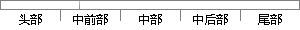

这些接口可作为应用参考帮助用户实现高端的产品设计。
片段位置图

相似结果
相似片段：MMC卡接口以及内部的 PLL时钟发生器,这些接口可作为应用参考帮助用户实现高端产品...(简称WinCE),它是为各种嵌入式系统和产品设计的一种压缩的、具有高效的、可...
| 标题 | 《光谱电化学微电流检测系统的研究》 |
| 对比库 | 中国学位论文全文数据库 |
| 作者 | 范满红 |
| 机构 | 西北师范大学 |
| 分类 | 电路与系统 |
| 年份 | 2012 |
| 相似率 | 100% （严重抄袭） |
※ 片段修改建议 ※
近似词参考：- 参考：款式
- 应用：利用 运用
- 帮助：帮忙 扶助 辅助 践言 接济 匡助 资助
系统自动生成语句：这些接口可作为利用款式帮忙用户实现高端的产品设计。
注：本片段修改建议为系统自动生成，仅供参考。